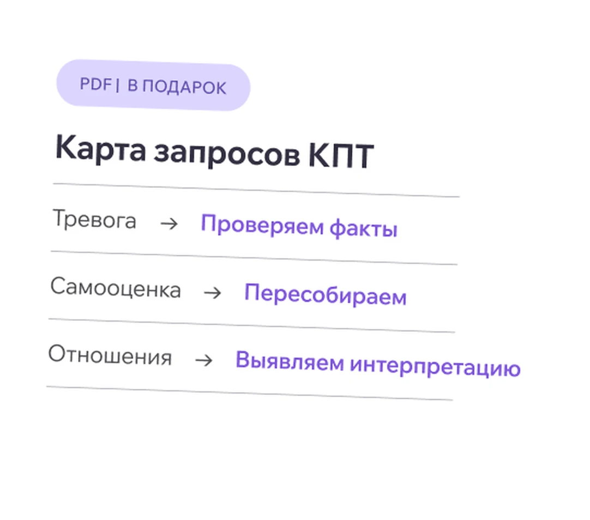

Почему КПТ подходит почти под любой запрос
Для психологов и студентов, которые выбирают метод. Покажем, как мыслит КПТ-терапевт, и поможем разобраться, подходит ли вам этот метод до начала обучения.
3 сентября 17:00
Этот вебинар стоит вашего времени, если…
-
Выбираете первый метод
Подходов десятки, у каждого громкая реклама. Выбрать нужно один — и от него зависит, как скоро вы выйдете в практику.
-
Работаете без метода-стержня
Техники есть, но нет единой опоры, которая ведет сессию от запроса до результата.
-
Скептичны к КПТ
Слышали, что это «таблички и домашки». Придете — проверите на живой сессии, а не на пересказах.
Почему психологи работают в КПТ
-
Доказательная база
За клиническими решениями в КПТ стоят десятилетия исследований — обсудим, что это дает вам как специалисту.
-
Работает с частыми запросами
Тревога, самооценка, прокрастинация, выгорание — запросы, с которыми психолог сталкивается каждую неделю.
-
Видимый результат
Клиент понимает, что происходит на сессии и что изменилось после нее. Разберем, почему это удерживает клиентов.
Один алгоритм сессии — для любого запроса
Тревога, самооценка, отношения, прокрастинация, выгорание — на вебинаре вы увидите единую структуру сессии, которая позволяет работать со всеми этими запросами по одному механизму.
- Тревога
- «Постоянно думаю, что что-то пойдет не так».
- Самооценка
- «Я недостаточно хорош(а)».
- Отношения
- «Меня постоянно задевают слова других».
- Прокрастинация
- «Постоянно откладываю, хотя понимаю, что нужно делать».
- Выгорание
- «Я уже не справляюсь, но не могу остановиться».
Что вы унесете с эфира
-
Понимание механизма
Как устроена логика КПТ — без учебника, на примерах.
-
Взгляд на живую работу
Демо-фрагмент сессии и его разбор: что делал терапевт и почему именно так.
-
Ответ «мой ли это метод»
Оцените метод по профессиональным ценностям, а не по маркетинговым обещаниям.
-
Первый шаг к практике
Почему с КПТ начинают: метод можно внедрять сразу не только в работу с клиентами, но и начинать практиковать при работе над собой.
Как пройдет вебинар
-
Познакомимся
Кто ведет, что будет на эфире и почему он полезен, даже если КПТ вы пока не рассматривали. Вопросы можно задавать с первой минуты — в чате или голосом, преподаватель отвечает по ходу
-
Почему КПТ сейчас
Доказательная база и место метода на рынке — коротко и без фанатизма.
-
Механизм метода
Треугольник «мысли — эмоции — поведение» и как он превращается в план работы с клиентом.
-
Один метод — разные запросы
Разберем и покажем как классическая структура сессии подходит под разные запросы.
-
Демо-фрагмент сессии с разбором
Смотрим кусочек живой работы и обсуждаем: что и с какой целью говорит и делает терапевт.
-
Ваш ли это метод + ответы на вопросы
Критерии выбора, ответы из чата. Коротко расскажем про обучение в Академии — честно и без давления.
Вебинар проведет наш преподаватель
Александр Шакиров
Психолог-консультант, магистр психологии по направлению «консультативная психология». Работает в подходах CBT, схема-терапии и ACT.
- Институт Бека, США
- Оксфордский центр КПТ
- Ассоциация КПТ
- Институт Б. Д. Карвасарского
Участие бесплатное
Живой кейс, разбор демо-сессии и базовые техники — чтобы увидеть, как КПТ работает почти с любым запросом — и понять, ваш ли это метод.
-
Заполните форму
Имя, телефон и удобный мессенджер — займет полминуты
-
Доступ придет в мессенджер
Ссылка на эфир придет в Telegram или MAX. Напомним заранее
Подарок участникам вебинара
Почему КПТ подходит почти под любой запрос. 7 самых типичных клиентских запросов, опоры при выборе метода, а также маркеры, которые помогут определить подходит ли КПТ вашим клиентам.

Ответы на популярные вопросы
Не нашли ответа на свой вопрос? Напишите нам
Сколько стоит участие?
Участие бесплатное — нужна только регистрация. Ссылка на эфир придет в выбранный мессенджер, напомним перед началом.
Я не работаю в КПТ и мало о нем знаю. Мне подойдет вебинар?
Да, он рассчитан именно на тех, кто в КПТ не работает. Все термины объясняем по ходу, а если что-то непонятно — вопрос можно задать прямо на эфире, в чате или голосом, преподаватель отвечает сразу.
Я еще учусь на психолога и только выбираю метод. Мне не рано?
Наоборот, это лучший момент. Вебинар для того и задуман: посмотреть на метод в живой работе и понять, ваш ли он, — до того, как вкладываться в длинное обучение.
Я работаю в другом подходе. Зачем мне КПТ?
Прийти посмотреть — не значит менять подход. КПТ спокойно относится к интеграции: его техники встраивают в практику, не отказываясь от своего направления. На эфире покажем, как метод устроен изнутри, а выводы — за вами.
Где проходит вебинар?
Онлайн, в Zoom или Контур Толк — обе платформы доступны в России без VPN. Достаточно перейти по ссылке из мессенджера.
Сколько длится эфир?
Около полутора часов.
Будет ли запись?
Да, запись будет. Но живое участие дает больше: можно задать вопрос преподавателю и сразу получить ответ, а участники эфира получают индивидуальные условия обучения.
Демо-сессия — это сессия с реальным клиентом?
Нет. Это учебная демонстрация: участник дает согласие заранее, данные реальных клиентов не используются. Задача демо — показать, как устроена работа в методе, а не терапию конкретного человека.
Выдается ли сертификат за участие?
Нет, за вебинар сертификат не выдается. Документы установленного образца — только по итогам обучающих программ Академии.
Это продающий вебинар?
Скажем честно: в конце коротко расскажем об обучении в Академии и пригласим на бесплатную консультацию — это несколько минут. Все остальное время — метод, разбор запросов и демо-сессия.